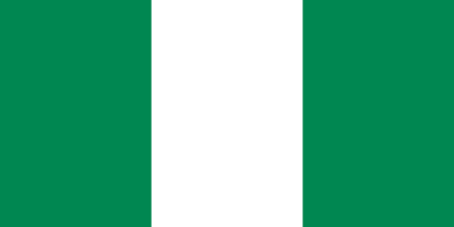

What Should You Know About Nigeria?
Learn some basic facts about Nigeria so you can show off to any Nigerian you come across.
| Population: | 206 million individuals |
|---|---|
| Area: | 923,768km² |
| Capital: | Abuja |
| Independence Day: | 1st October, 1960 |
| President: | Muhammadu Buhari |
| Number of States: | 37 States including FCT |
| Currency: | Naira |
| Number of Ethnic Groups: | Over 250 |
| Flag: |  |
Fun Facts
Source: Facts
- World's Second Largest Film Industry and Explorer of Afrobeats
Nigeria's film industry is the second largest film producer in the world. Its film industry is called NOLLYWOOD. While it is the second largest film producer, it is also a pioneer of afrobeats, as the music shape the music industry in Africa. Top artists in Nigeria( Burna Boy, Wizkid, Davido and Tiwa Savage)also collaborate with other artists like Beyonce, Chris Brown, Nicki Minaj and the likes.
- Oil is one of its biggest exports.
Nigeria is a large producer of Crude oil with an average of 2.5 million barrels a day. They have a massive reserve of petroleum, and it plays a vital role in the Nigerian economy.
- Social media is very popular in Nigeria. Over 70% of the population uses social media on a daily basis.
- Lagos has the largest population of 20 million people, but it is not the capital city of Nigeria.
- It is a member of the British Commonwealth.
- Nigerian Flag was designed by Mr. Taiwo Akinkunmi in 1959